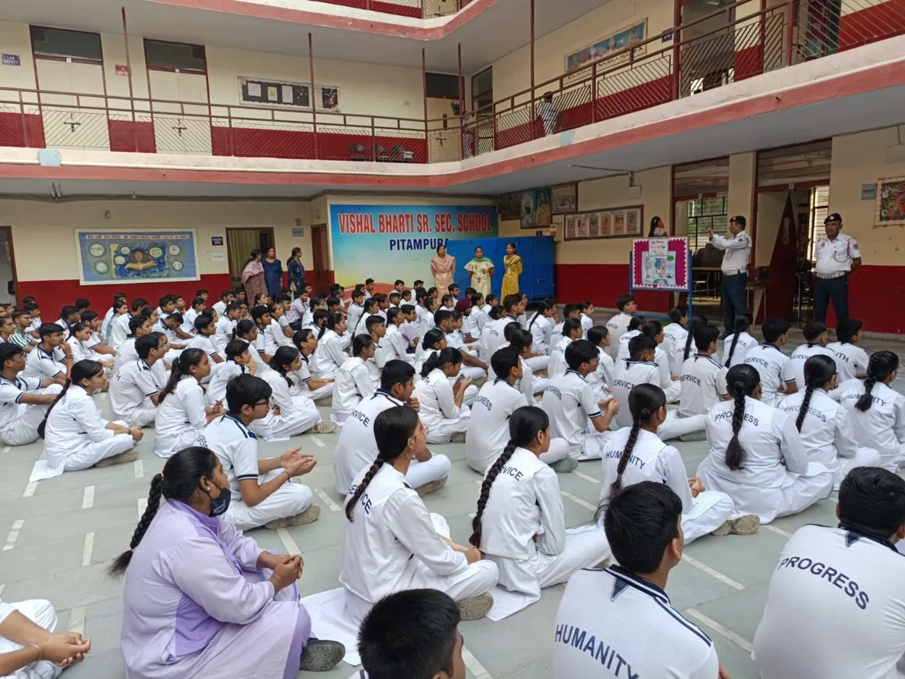
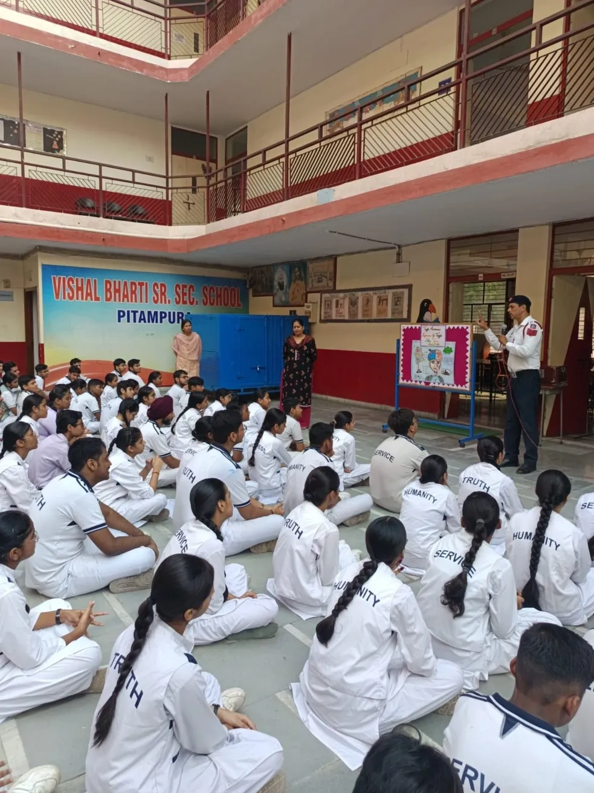
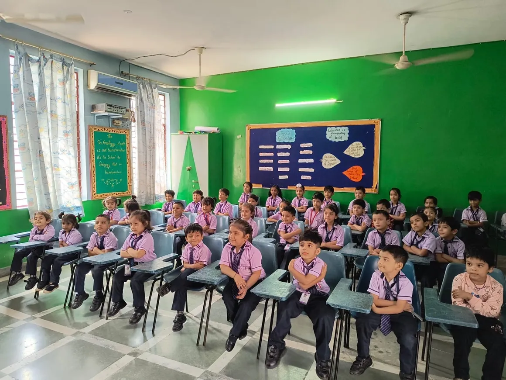

General Guidelines:
Uniform:
Attendance:
Examination:
Assessments play a key role in the academic journey at Vishal Bharti School. We conduct periodic evaluations to assess student performance and progress. Here are the key details of our assessment system:
(i) L.K.G., U.K.G., and II:
Students will be evaluated through their everyday work, class response, participation in various co-scholastic activities, and writing skills. Only worksheets will be given for evaluation, and the evaluation will be divided into two terms.
(ii) Classes: III-V
Evaluation for these classes is divided into two terms. Along with periodic tests, internal assessments will be taken. Internal assessment will be based on the following components:
(iii) Classes: VI-XII
The examination pattern for classes XI and XII will be spread over the whole year with unit tests, half-yearly, and annual examinations, each consisting of 80 marks. Marks are allocated for internal assessments, which will contribute 20 marks and will be added to the unit test, OTBA, projects, portfolios, notebooks, subject enrichment activities, quizzes, and pre-board examinations. A minimum of 75% attendance is required for students to be allowed to appear in the Annual Examination.
To get admission in class XI, students need to select one of the following streams. The selection of subjects will depend upon the grade and percentile rank secured in the final result of class X.
At Vishal Bharti School, we believe in supporting the mental and emotional well-being of our students. Our counselling program aims to help students navigate academic pressures, personal challenges, and emotional growth.
  